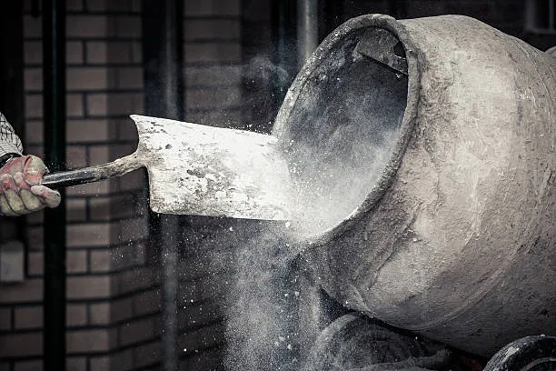
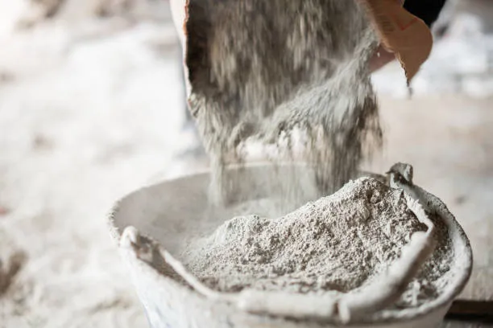

Welcome to our second-hand cement project! Below are some instructions to get started:
1. We specialize in offering high-quality second-hand cement products.
2. Our cement items are sourced from reliable sources and are thoroughly inspected for quality.
3. Each batch of cement undergoes rigorous testing to ensure it meets industry standards.
4. Our second-hand cement products provide cost-effective solutions for your construction needs.
5. Join us in our mission to promote sustainability by reusing cement materials.
6. Whether you're working on a small DIY project or a large-scale construction, our second-hand cement offers reliability and affordability.
7. Contact us today to explore our inventory of second-hand cement products or to inquire about availability!
Back